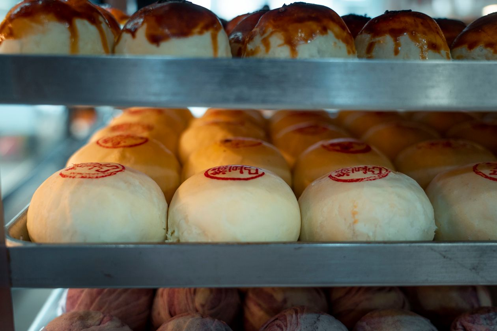

Corporate · Bishop Street
Four hundred boxes for a bank
The ask. A bank on Bishop Street wanted 400 gift boxes of four — double-yolk lotus, their chairman's favourite — for clients across three branches, collected over three days in the last week of the season. One bad box, they told me, would be opened in front of the client it was meant to impress.
What I did. The order took twenty-seven of my forty-one bake days, so it went into the book in August, before the retail rush. Every cake was baked to the same day's rhythm: pressed in the morning, rested three full days, boxed on the fourth. Each box was weighed before it was tied — a box of four double-yolks has a weight it must be, and a light box means a cake was swapped by tired hands.
The outcome. Four hundred boxes, collected on time across 10–12 September, and not one returned. The bank's order for 2027 was the first name in the new book.
“Four hundred boxes, and every cake inside them was rested, weighed and checked the same way as the four in my own family's box. Our clients noticed. Three other branches asked where the boxes came from.”
Sandra Ong, office manager, the bank on Bishop Street